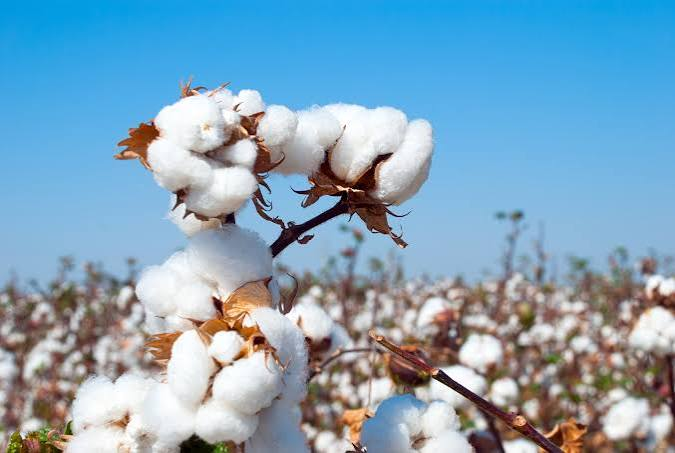
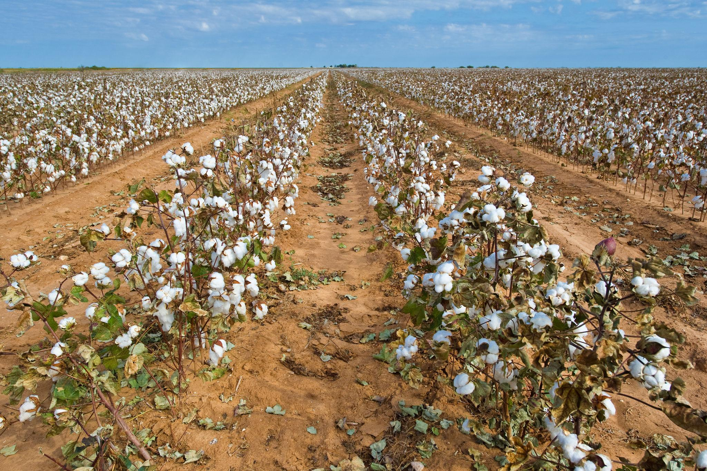
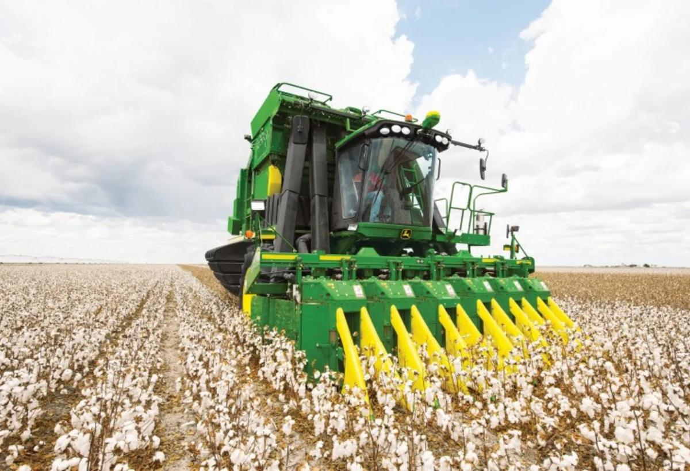
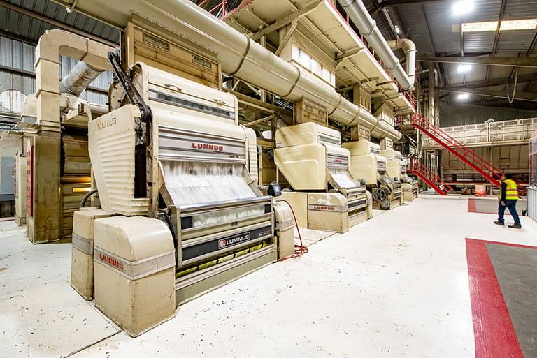

Raw Materials
Where it all begins

Every cotton T-shirt begins with raw materials. Cotton is grown on farms, harvested and collected before being sent for processing. These first stages require land, water and energy.
🌿Key Facts
Cotton is a natural fibre that grows around the seeds of the cotton plant. It is widely used in clothing because its fibres can be turned into yarn and fabric.
- Cotton is a natural plant-based fibre.
- It grows best in warm climates with suitable sunlight and water.
- It can be harvested by hand or using machines.
How Cotton Is Produced
Before cotton can become part of a T-shirt, it goes through several stages.

Growing
Cotton seeds are planted in fields. The plants need suitable temperatures, sunlight and water to grow.

Harvesting
When the cotton bolls open, the cotton fibres are collected by hand or with harvesting machines.

Ginning
The harvested cotton is cleaned to separate the fibres from the seeds and other unwanted material.
What Happens Next?
Once the cotton has been harvested and cleaned, it is ready to move to the processing stage. There, the fibres will be prepared and spun into yarn.
Continue to Processing →